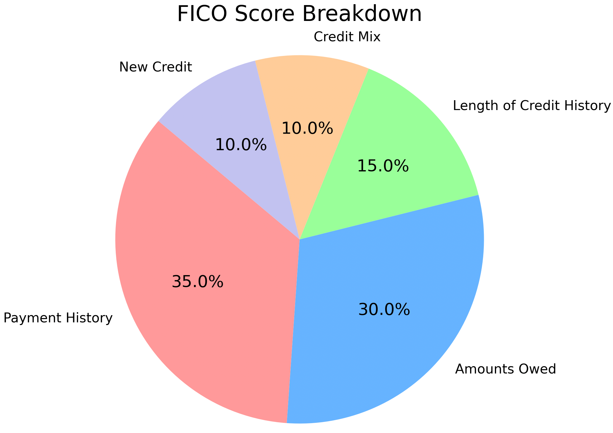

Understanding Your FICO Credit Score: A Comprehensive Guide
Introduction
Your credit score is more than just a number—it's a key that unlocks financial opportunities throughout your life. This three-digit number influences whether you can rent an apartment, how much you'll pay for insurance, and even your chances of landing certain jobs. Understanding how credit scores work empowers you to make better financial decisions and potentially save thousands of dollars over your lifetime.
This guide will explore everything you need to know about FICO credit scores, including how they're calculated, potential biases in the system, and strategies for building solid credit. We'll also compare credit cards and debit cards to help you decide which payment methods align with your financial goals.
What Is a FICO Credit Score?
Origin and Purpose
The FICO score was developed by the Fair Isaac Corporation in 1989 to standardize how lenders evaluate consumer creditworthiness. Before FICO scores, credit decisions were often subjective and potentially discriminatory. By creating a standardized algorithm, FICO aimed to make lending decisions more objective and consistent.
Today, FICO scores are used by approximately 90% of top lenders when making consumer lending decisions. While there are other credit scoring models (such as VantageScore), FICO remains the industry standard.
Score Range and Interpretation
FICO scores range from 300 to 850, with higher scores indicating lower credit risk. Here's how scores are typically categorized:
| Score Range | Category | Interpretation |
|---|---|---|
| 300-579 | Poor | Well below average. Demonstrates to lenders that you're a risky borrower. |
| 580-669 | Fair | Below average. Many lenders will approve loans but not at the best rates. |
| 670-739 | Good | Near or slightly above average. Most lenders view this as a good score. |
| 740-799 | Very Good | Above average. Demonstrates to lenders that you're a very reliable borrower. |
| 800-850 | Exceptional | Well above average. Shows lenders you're an exceptional borrower. |
Figure 1: FICO Score Range Chart showing the distribution of scores from Poor (300-579) to Exceptional (800-850), with color coding from red to green indicating increasing creditworthiness.
Why Your Credit Score Matters
Your FICO score impacts numerous aspects of your financial life:
-
Loan Approval and Terms: Determines whether you qualify for mortgages, auto loans, and personal loans, as well as the interest rates and terms you'll receive.
-
Credit Card Approval: Influences which credit cards you can get, your credit limits, and interest rates.
-
Housing Applications: Many landlords check credit scores when evaluating rental applications.
-
Insurance Premiums: In most states, insurance companies use credit-based insurance scores to help determine auto and homeowners insurance premiums.
-
Utility Services: May affect whether you need to pay security deposits for utilities like electricity, water, or cell phone service.
-
Employment: Some employers check credit as part of background screening, particularly for positions with financial responsibilities.
The difference between a good and excellent credit score can translate to thousands of dollars saved over a lifetime. For example, on a $300,000 30-year mortgage, someone with a 760 score might secure a rate 0.5% lower than someone with a 660 score, saving approximately $30,000 over the life of the loan.
Components of a FICO Score
Your FICO score is calculated based on five components, each weighted differently:

Figure 2: Pie chart showing the five components of a FICO score with their relative percentages: Payment History (35%), Amounts Owed (30%), Length of Credit History (15%), New Credit (10%), and Credit Mix (10%).
1. Payment History (35%)
Your payment history carries the most weight in your credit score calculation. It tracks whether you've paid your credit accounts on time.
Key factors include: - Payment record on credit cards, retail accounts, installment loans, and mortgages - Presence of delinquencies, collections, and public records - Time since last late payment - Severity of delinquency (30, 60, 90+ days late) - Number of past due items
Even a single missed payment can significantly impact your score, with recent late payments causing more damage than older ones. Bankruptcies, foreclosures, lawsuits, wage attachments, and liens also fall into this category and can severely damage your score for years.
2. Amounts Owed (30%)
This component examines how much debt you're carrying and how it compares to your available credit.
Key factors include: - Credit utilization ratio: The percentage of available revolving credit you're using (total balances ÷ total credit limits) - Number of accounts with balances - Amount still owed on installment loans compared to original loan amounts - Presence of balances on certain types of accounts
Credit utilization is especially important. Financial experts typically recommend keeping utilization below 30%, though lower is better. For example, if you have $10,000 in available credit across all your credit cards, ideally you should keep your total balances below $3,000.
3. Length of Credit History (15%)
This factor considers how long you've been using credit.
Key factors include: - Age of your oldest account - Age of your newest account - Average age of all your accounts - How long specific account types have been established - How long since you've used certain accounts
In general, a longer credit history benefits your score. This is why financial advisors often recommend keeping older accounts open, even if you rarely use them.
4. Credit Mix (10%)
This component looks at the variety of credit accounts you manage.
Key factors include: - Mix of credit cards, retail accounts, installment loans, mortgage loans - Number of accounts in each category
FICO rewards consumers who demonstrate they can responsibly handle different types of credit. However, you don't need one of every type of account to achieve a good score.
5. New Credit (10%)
This factor examines your recent credit activity.
Key factors include: - Number of recently opened accounts - Number of recent credit inquiries - Time since recent account opening(s) - Time since credit inquiry(ies) - Re-establishment of positive credit history following past payment problems
Multiple credit applications in a short period can signal financial distress to lenders. However, FICO recognizes rate-shopping behavior, so multiple inquiries for the same type of loan (like a mortgage or auto loan) within a short period (typically 14-45 days) count as a single inquiry.
Biases in the Credit Scoring System
While FICO scores aim to be objective, several inherent biases exist within the credit scoring system that disadvantage certain populations.
Credit Invisibility
According to the Consumer Financial Protection Bureau, approximately 26 million Americans (about 11% of adults) are "credit invisible," meaning they have no credit history with major reporting agencies. Another 19 million have "unscorable" credit files because their histories are too limited or outdated.
Credit invisibility disproportionately affects: - Young adults - Low-income consumers - Recent immigrants - Minorities, particularly Black and Hispanic consumers
Without a credit score, these individuals face higher costs for financial services, difficulty securing housing, and limited access to employment opportunities—creating a challenging cycle to break.
Credit Card Bias
The credit scoring system inherently favors credit card users over those who prefer debit cards or cash. Since payment history and credit utilization heavily influence FICO scores, people who regularly and responsibly use credit cards generally achieve higher scores than those who avoid debt entirely.
This creates a paradoxical situation: a person who uses credit cards frequently (but pays them off) appears more financially responsible to the scoring system than someone who avoids debt and pays for everything with cash or debit cards.
Read the Credit Card Bias In Detail
| Overall Results | Credit Card User (Alex) | Debit Card User (Jamie) |
|---|---|---|
| Estimated FICO Score | 810 (Exceptional) | 680 (Good) |
Figure 3: Comparison chart showing hypothetical credit scores for two financially responsible individuals—one who primarily uses credit cards and one who primarily uses debit cards—highlighting the scoring advantage for the credit card user despite similar financial responsibility.
The Alternative Data Movement
Recognizing these biases, the financial industry has begun exploring alternative data sources to create more inclusive credit scoring models. Programs such as:
- UltraFICO: Considers banking data like checking and savings account balances and transaction history
- Experian Boost: Allows consumers to add utility and telecom payments to their credit files
- Rental reporting services: Report on-time rent payments to credit bureaus
These initiatives aim to help credit invisible consumers build credit histories based on financial behaviors that traditionally went unrecognized.
Credit Cards vs. Debit Cards
Understanding the differences between credit and debit cards can help you make informed decisions about which to use in various situations.
Credit Card Advantages
-
Credit Building: Regular use and on-time payments help build and improve your credit score.
-
Fraud Protection: Limited liability for fraudulent transactions (typically $50 maximum under federal law), and many issuers offer zero liability.
-
Rewards and Cashback: Many cards offer points, miles, or cash back on purchases.
-
Purchase Protection: Benefits may include extended warranties, purchase protection against damage or theft, price protection, and return protection.
-
Travel Benefits: Perks like travel insurance, rental car insurance, no foreign transaction fees, and airport lounge access on premium cards.
-
Grace Period: Time between a purchase and when interest begins accruing (typically 21-25 days).
-
Emergency Funds: Provides access to credit in emergencies when you don't have cash available.
Credit Card Disadvantages
-
Interest Charges: High interest rates (averaging 18-24% APR) if balances aren't paid in full.
-
Annual Fees: Some cards charge yearly fees, especially those with premium rewards.
-
Overspending Risk: Psychological studies show people typically spend 12-18% more when using credit cards versus cash.
-
Debt Accumulation: Revolving credit can lead to long-term debt if not managed carefully.
-
Complex Terms: Variable interest rates, fee structures, and reward programs can be confusing.
-
Credit Score Impact: Mismanagement can damage your credit score.
Debit Card Advantages
-
Spending Control: Directly linked to your checking account, limiting spending to available funds.
-
No Interest Charges: Since you're using your own money, there's no interest.
-
No Annual Fees: Most debit cards don't charge annual fees.
-
ATM Access: Convenient access to cash, often with no fees at in-network ATMs.
-
Simplicity: Straightforward transactions without complex terms.
-
Debt Prevention: Helps avoid accumulating debt.
-
Acceptance: Widely accepted wherever credit cards are, with Visa or Mastercard logos.
-
Real-Time Expense Tracking: Transactions immediately reflect in your account balance.
Debit Card Disadvantages
-
Limited Credit Building: Usage isn't typically reported to credit bureaus, providing minimal help building credit.
-
Weaker Fraud Protection: While improving, fraud protection for debit cards isn't as robust as credit cards, and funds can be tied up during dispute resolution.
-
Holds on Funds: Some merchants (hotels, gas stations, rental cars) place holds that temporarily reduce available funds.
-
Fewer Rewards: Rewards programs are less common and typically less generous.
-
Minimal Purchase Protection: Few offer extended warranties or purchase protection.
-
Overdraft Risk: Potential for overdraft fees if you spend more than your available balance.
-
Travel Limitations: Some travel providers require credit cards for reservations.
Figure 4: Table comparing key features of credit cards and debit cards, with checkmarks indicating which option provides each benefit.
Strategic Use of Both
Many financial experts recommend a hybrid approach:
- Credit cards for:
- Major purchases that benefit from consumer protections
- Travel expenses
- Online shopping
- Recurring bills you can comfortably pay in full each month
-
Situations where building credit is a priority
-
Debit cards for:
- Daily discretionary spending
- Entertainment and dining out
- Grocery shopping
- Situations where you're trying to control spending
- When merchants charge credit card surcharges
By strategically using both payment methods, you can build credit while maintaining spending discipline.
Strategies for Building Credit Responsibly
Whether you're starting from scratch or rebuilding after financial difficulties, these strategies can help you establish and maintain a strong credit profile.
Starting with No Credit
-
Become an Authorized User: Ask a family member with good credit to add you as an authorized user on their credit card. You'll benefit from their payment history without needing to qualify for credit yourself.
-
Apply for a Secured Credit Card: These cards require a security deposit that typically becomes your credit limit. After demonstrating responsible use, many issuers will convert the account to a traditional unsecured card.
-
Consider a Credit-Builder Loan: These small loans place your borrowed funds in a locked savings account while you make payments. Once paid off, you receive the funds plus any interest earned.
-
Student Credit Cards: Designed for college students with limited credit history, these often have lower requirements for approval.
-
Retail Store Cards: Often easier to qualify for than major credit cards, though they typically have higher interest rates.
Figure 5: Flowchart showing different pathways to building credit from scratch, with recommendations based on different starting situations.
Maintaining and Improving Credit
-
Pay on Time, Every Time: Set up automatic payments at least for the minimum due to avoid late payments.
-
Keep Utilization Low: Aim to use less than 30% of your available credit—ideally less than 10% for optimal scores.
-
Don't Close Old Accounts: Length of credit history matters, so keep older accounts open even if rarely used.
-
Limit Hard Inquiries: Only apply for new credit when necessary, and space out applications.
-
Diversify Credit Types: Eventually, aim for a mix of revolving accounts (credit cards) and installment loans.
-
Regularly Monitor Your Credit: Check your credit reports annually at AnnualCreditReport.com and consider using a free credit monitoring service.
-
Dispute Errors Promptly: Report inaccuracies to both the credit bureaus and the creditor in writing.
Using Debit Cards While Building Credit
If you prefer using debit cards for most transactions, you can still build credit by:
-
Using a Credit Card Minimally: Charge a small recurring bill (like a streaming service) to a credit card and set up automatic payments.
-
Exploring Rent Reporting Services: Services like Rental Kharma, LevelCredit, and Esusu report your rent payments to credit bureaus.
-
Reporting Utility Payments: Use Experian Boost to get credit for utility and telecom payments.
-
Self-Reporting Through Financial Apps: Some financial apps help report regular bill payments to credit bureaus.
The Future of Credit Scoring
The credit scoring landscape is evolving to address current limitations and biases:
Inclusive Data Sources
Future models will likely incorporate more alternative data sources, such as: - Rent and utility payments - Cell phone plan payments - Banking activity and cash flow - Subscription services - Financial app usage and budgeting behavior
Artificial Intelligence and Machine Learning
Advanced algorithms may better assess risk by identifying patterns in financial behavior that current models miss. This could potentially: - Reduce reliance on traditional credit history - Create more personalized credit evaluations - Identify responsible financial behavior even in non-traditional contexts
Open Banking Integration
Open banking initiatives allow consumers to securely share their banking data with third parties, potentially enabling: - Real-time credit assessments - Faster loan approvals - More accurate financial profiles - Greater consumer control over their financial data
Financial Literacy Integration
Some emerging models reward consumers who demonstrate financial knowledge and responsible behavior through: - Financial education completion - Long-term savings behavior - Thoughtful spending patterns - Proactive financial management
Conclusion
Your FICO credit score represents an important aspect of your financial identity, but it's not the complete picture of your financial health. By understanding how credit scores work—including their strengths and limitations—you can make more informed decisions about using credit and debit cards strategically.
Remember that good credit is built gradually through consistent, responsible financial behaviors. While the system may have inherent biases favoring credit card use, you can develop strategies that balance building credit with maintaining financial discipline.
Whether you prefer credit cards, debit cards, or a combination of both, what matters most is developing habits that support your long-term financial goals. Monitor your credit regularly, address issues promptly, and continuously educate yourself about personal finance to take control of your financial future.
Resources for Further Learning
Credit Reporting Agencies
- Equifax: www.equifax.com
- Experian: www.experian.com
- TransUnion: www.transunion.com
Free Credit Reports and Monitoring
- Annual Credit Report: www.annualcreditreport.com
- Credit Karma: www.creditkarma.com
- Credit Sesame: www.creditsesame.com
Government Resources
- Consumer Financial Protection Bureau: www.consumerfinance.gov
- Federal Trade Commission: www.consumer.ftc.gov
Financial Education
- MyFICO Education Center: www.myfico.com/credit-education
- Khan Academy Personal Finance: www.khanacademy.org/college-careers-more/personal-finance
- National Foundation for Credit Counseling: www.nfcc.org